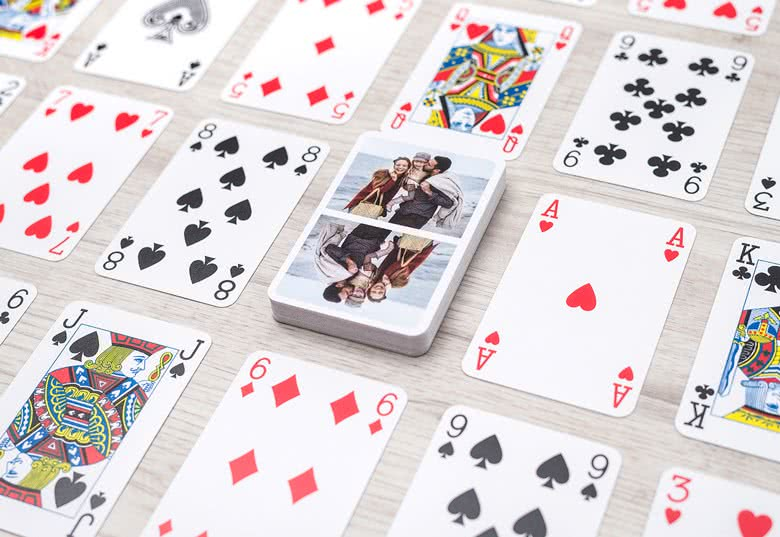
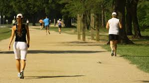

A Few Hobbies That Helps Me Clear My Mind...
1st Hobby is Playing Pool
Shooting pool is one of the most relaxing thing you can do. Shooting pool makes me feel as if I have no care in the world.
Although it's a competitive sport, it doesn't alway feel like one. I know the person playing against me is competing. But to be honest, I find that I am only competing against myself. I don't say that to be cocky. I say that because I am always trying to do better than the last time I shot pool. To put in another way, my only goal is beating my old score.
2nd Hobby is Playing Cards
I have a few card games I like to play. However, unlike my other hobbies, playing cards make my competitive side come out. It's fun when I am winning but stressful when I am losing. Playing cards is a game I hate losing, especially when the players are trash talking. However, who likes to lose card games, let alone any game.
3rd Hobby is Running or Jogging in the Park
Walking and jogging in the park in my number 1 preferred method of exercising. I really clear my mind was walking or jogging. The best way to do either is with music playing on your headphones. I am often in my own world when doing so. Not to mention, I feel like a completely different person after I jogging and/or walk. The downside is I don't get to walk in the park as much as I would like to. Hopefully that changes soon, considering I just moved 3 minutes away from a park.